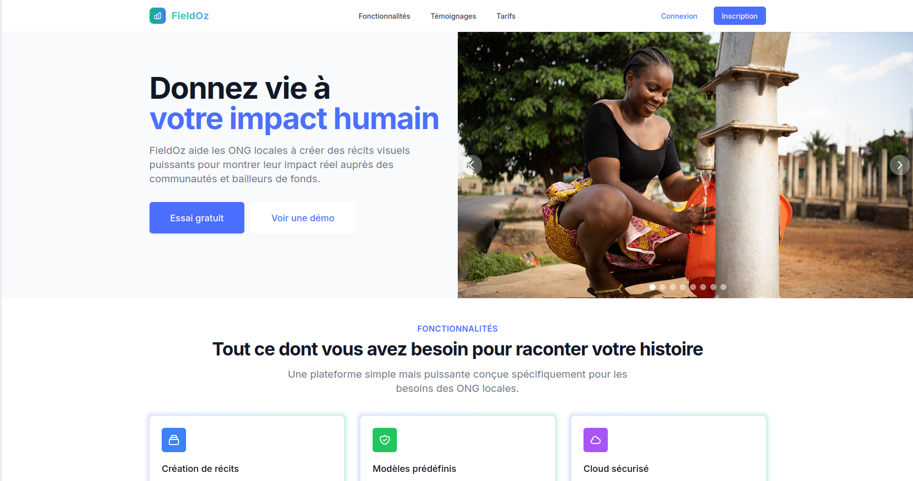
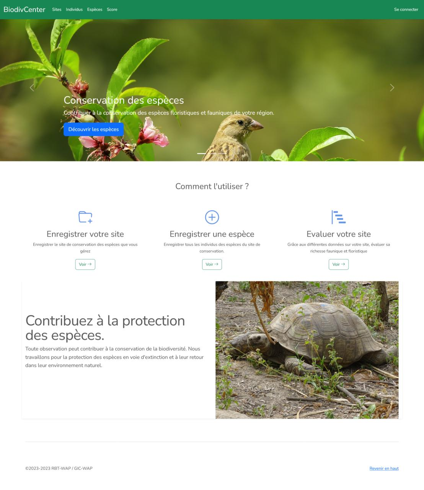
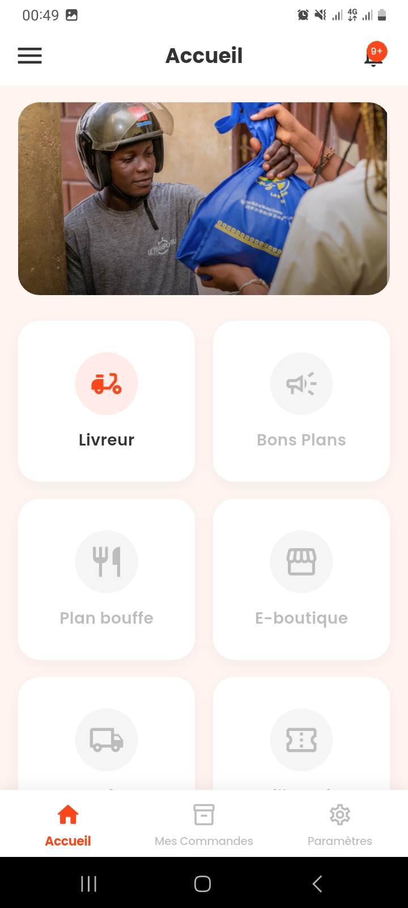
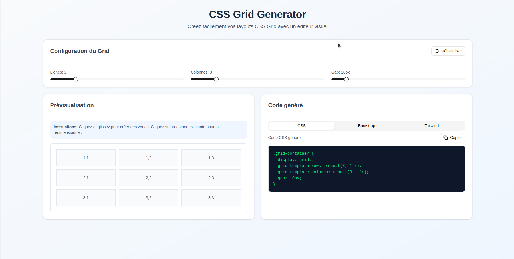
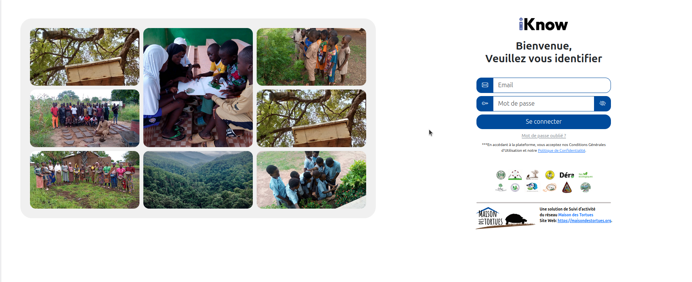
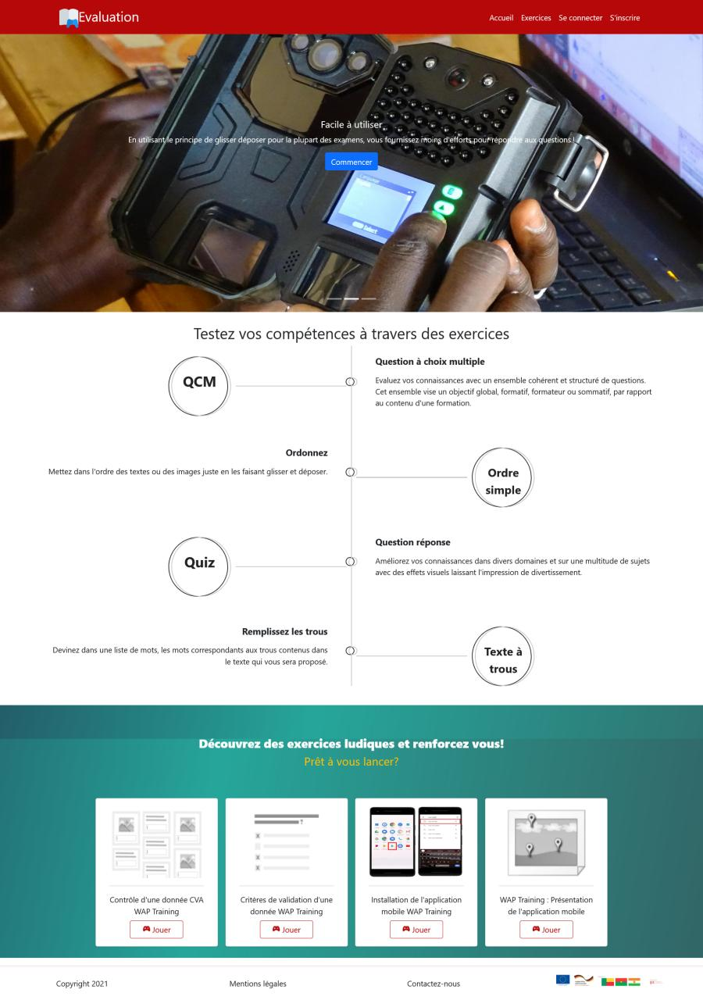
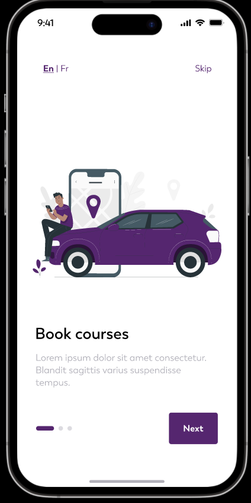

CONCEVOIR DES SYSTÈMES D'EXCEPTION.
BÂTIR POUR
DURER.
Je conçois et développe des architectures web et mobiles sur-mesure pour les entreprises et visions ambitieuses. Celles qui refusent le générique, exigent une rigueur technique absolue et veulent marquer les esprits par des solutions qui racontent une vraie histoire.
4+ ans forgés au contact du terrain, des réserves naturelles et des institutions internationales (GIZ). Pas de dépendances superflues, pas de factures cloud artificielles : du code sobre, mesurable et directement utile à ceux qui l’opèrent.
FIELDOZ — IMPACT RÉEL & TÉLÉMÉTRIE

FieldOz — Donner du relief à l'impact social
Plateforme SaaS conçue pour transformer des données terrain complexes en récits visuels et rapports d'impact incontestables. Une architecture pensée pour offrir une clarté absolue aux bailleurs de fonds et aux équipes sur le terrain.
« Synthétiser l'essentiel, rendre tangibles les données critiques et garantir une fiabilité absolue en toutes conditions. »
UNE DÉMARCHE D'EXCELLENCE : PRÉCISION & ARTISANAT.
Loin des effets de mode et du générique, chaque choix technique est pensé pour servir l'identité du projet, l'évolutivité long terme et l'impact visuel.
La Clarté avant le Code
Un projet d'exception commence par une compréhension intime des enjeux métier. Avant la première ligne de code, chaque choix d'architecture est pensé pour éliminer la complexité inutile et garantir une évolutivité totale.
L'Esthétique qui Parle
Une interface ne doit pas seulement être jolie : elle doit incarner votre identité et captiver immédiatement. Je privilégie un design épuré, intemporel et performant où chaque détail visuel a un sens.
L'Économie d'Énergie & Performance
La vraie puissance réside dans la sobriété. Des bases de données optimisées, un backend Laravel solide et une exécution fluide pour que le système reste rapide et robuste, quelle que soit la charge.
RÉALISATIONS & REGISTRE OPÉRATIONNEL

BiodivCenter
Monitoring de la faune et valorisation des espèces pour les centres de conservation. Télémétrie drones, cartographie Leaflet et synchronisation en direct.

Le Transporteur / Beninfy
Suite logistique complète (Client, Livreur, Superviseur) avec calcul d'itinéraires adapté au réseau routier et négociation de tarification en direct.

Grid Generator
Générateur visuel de grilles CSS complexes avec drag-and-drop fluide pour faciliter la composition de mises en page responsives ultra-légères.

IKnow — Audit Terrain
Suivi transparent des activités opérationnelles pour les consortiums d'ONG. Indexation instantanée de rapports volumineux avec compression sur stockage objet.

Jande & Exam
Système d'évaluation de compétences et d'acquisition de langues locales adapté aux agents de terrain sans bagage technique préalable.

Beninfy Mobile
Guide culturel et touristique interactif du Bénin avec géolocalisation, suggestions patrimoniales dynamiques et fiches immersives.
Micro-Serveurs & Edge Relays
Installation et conteneurisation de serveurs autonomes sur matériel reconditionné pour bases de données déconnectées (Bénin, Niger, Burkina). Redondance dès reconnexion.
UNE RIGUEUR NÉE DES CONTRAINTES RÉELLES.
Mon approche du développement n'a pas débuté dans des bureaux aseptisés avec de la fibre optique illimitée. Elle a été forgée en autodidacte exigeant face à des connexions instables, des matériels hétéroclites et la nécessité absolue de faire fonctionner les choses du premier coup.
Lorsqu'on déploie une solution pour les agents des parcs WAP ou pour des équipes de santé publique en brousse, on comprend très vite qu'un bogue n'est pas un simple « ticket Jira » : c'est une mission arrêtée, un rapport financier bloqué ou une journée de patrouille perdue.
Architecte Systèmes Indépendant
Conception de plateformes de collecte hors-ligne, interfaçage AWS S3, cartographie de biodiversité et tableaux de bord d'aide à la décision pour le terrain.
Développeur Fullstack Lead // GIZ (Projet RBT-WAP)
Déploiement des outils de monitoring (BiodivCenter, WAP-Training), intégration des APIs naturalistes, documentation technique et formation des agents sur site.
Ingénieur Frontend & Mobilité
Développement mobile cross-platform Flutter, intégration de passerelles de géolocalisation et audit de performance web en conditions réseau dégradées.
LA BOÎTE À OUTILS SANS ARTIFICE.
- PHP / Laravel Avancé
- Node.js / Express Robuste
- Python / Django Data/Scrap
- Architecture REST Standard
- MySQL & SQLite Optimisé
- Flutter / Dart Cross-platform
- React / Next.js SSR/SSG
- Tailwind CSS Zero-Runtime
- Alpine & Livewire Ultra-Léger
- TypeScript Strict Type
- Docker & Compose Reproductible
- AWS S3 / Stockage Frugal
- Nginx Reverse Proxy Perf
- Git & GitLab CI Pipelines
- Linux VPS / cPanel Autonome
- Diagnostic Froid Sous 48h
- Pédagogie & Accomp. Sans jargon
- Documentation Autonomie
- Gestion du Stress Éprouvé
- Écoute Utilisateur Directe
DÉMARRONS UN PROJET D'ENVERGURE.
Vous avez une vision ambitieuse, une plateforme complexe à concevoir ou un système existant à élever aux plus hauts standards ? Échangeons sur vos objectifs.
Intervention en autonomie complète, basée sur des livrables précis et un alignement stratégique clair dès le départ.
DISPONIBLE MISSIONS REMOTE MONDE